Isosceles & Equilateral Triangles — Practice Set
Bank code: GEO-IET · Section: Geometry · 30 questions — Easy 8 · Medium 16 · Hard 6
Equal sides face equal angles; the altitude to the base of an isosceles triangle bisects it, and an equilateral triangle of side s has area s^2*sqrt(3)/4.
Every question below is live in the question bank under the ID shown — the sheet and the portal are the same questions. Attempt a level with the clock running, then check Part C.
Part A — Questions
Quantitative Comparison — the four choices are always the same, so they are not reprinted: (A) Quantity A is greater · (B) Quantity B is greater · (C) The two quantities are equal · (D) The relationship cannot be determined from the information given
Level 1 · Easy — 8 questions · ~7 min
warm-up — these must be automatic
Q1 · GEO-IET-001 · MCQ · 45s
In an isosceles triangle, the apex angle measures 40°. What is the measure of each base angle?
(A) 40°
(B) 60°
(C) 70°
(D) 80°
(E) 140°
Q2 · GEO-IET-003 · Numeric Entry · 35s
An equilateral triangle has a side length of 6. What is the perimeter of the triangle?
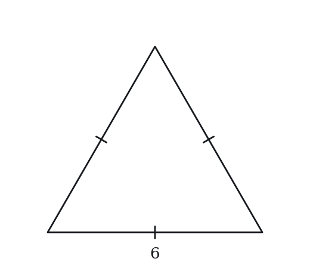
Numeric entry — write the number.
Q3 · GEO-IET-004 · MCQ · 50s
Triangle ABC has AB = AC = 10 and BC = 6. Which of the following must be true?
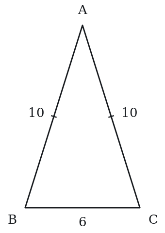
(A) Angle A > Angle B
(B) Angle B = Angle C
(C) Angle A = Angle B
(D) AB = BC
(E) The triangle is a right triangle
Q4 · GEO-IET-005 · MCQ · 45s
In isosceles triangle PQR, PQ = PR and angle Q = 55°. What is angle P?
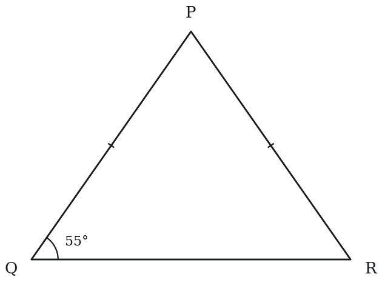
(A) 55°
(B) 60°
(C) 70°
(D) 75°
(E) 125°
Q5 · GEO-IET-006 · QC · 55s
Triangle XYZ is equilateral with side length 4.
Quantity A: The height of the triangle Quantity B: 2√3
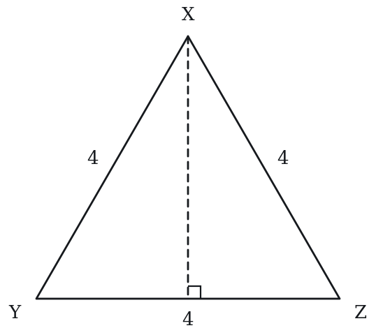
Q6 · GEO-IET-008 · Numeric Entry · 55s
In isosceles triangle ABC, AB = BC and the apex angle B = 120°. What is the measure, in degrees, of angle A?
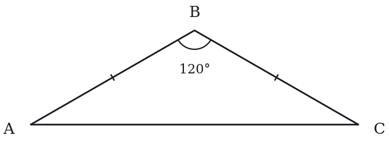
Numeric entry — write the number.
Q7 · GEO-IET-009 · MCQ · 40s
In isosceles triangle PQR, PQ = PR. The altitude from P meets QR at S, and QS = 4. What is the length of QR?
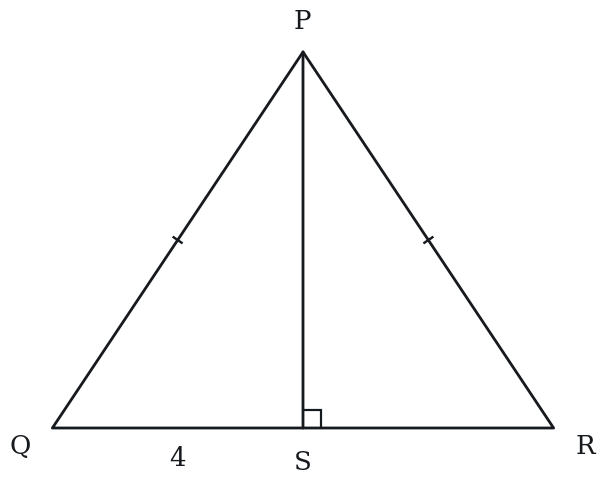
(A) 4
(B) 6
(C) 8
(D) 12
(E) 16
Q8 · GEO-IET-027 · MCQ · 85s
Triangle ABC is isosceles with AB = AC. Point D is the midpoint of BC. If BD = 5 and AD = 12, what is the area of triangle ABD?
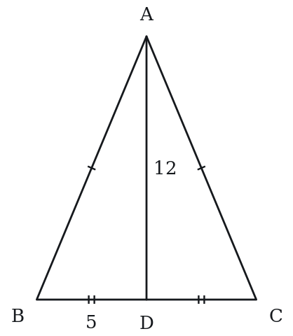
(A) 25
(B) 30
(C) 36
(D) 60
(E) 65
Level 2 · Medium — 16 questions · ~22 min
two or three steps, one planted trap each
Q9 · GEO-IET-011 · MCQ · 80s
In isosceles triangle DEF, DE = DF and angle D = (4x)°, angle E = (3x + 10)°. What is the value of x?
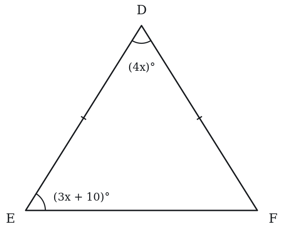
(A) 10
(B) 16
(C) 20
(D) 24
(E) 28
Q10 · GEO-IET-014 · QC · 85s
Isosceles triangle ABC has AB = AC = 13 and BC = 10.
Quantity A: The area of triangle ABC Quantity B: 60
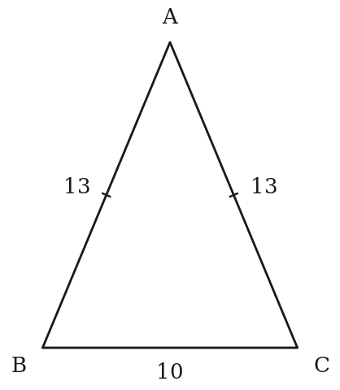
Q11 · GEO-IET-015 · Select all that apply · 80s
An isosceles triangle has a base angle of 75°.
Which of the following statements must be true?
Indicate all such statements.
(A) The apex angle is 30°
(B) The other base angle is 75°
(C) The triangle is equilateral
(D) The apex angle is less than either base angle
(E) The sum of the base angles exceeds 90°
Q12 · GEO-IET-016 · MCQ · 75s
An equilateral triangle and a square have equal perimeters. If the square has side length 12, what is the area of the equilateral triangle?
(A) 48√3
(B) 64√3
(C) 144
(D) 192
(E) 192√3
Q13 · GEO-IET-017 · QC · 90s
Triangle PQR is isosceles with PQ = PR = 5 and QR = 6. Triangle STU is isosceles with ST = SU = 5 and TU = 8.
Quantity A: Height of triangle PQR (from P to QR) Quantity B: Height of triangle STU (from S to TU)
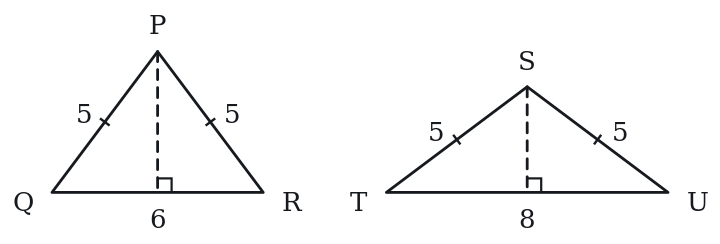
Q14 · GEO-IET-018 · Numeric Entry · 80s
An isosceles right triangle has a hypotenuse of length 10. What is the area of the triangle?
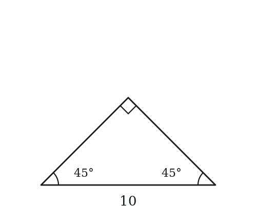
Numeric entry — write the number.
Q15 · GEO-IET-020 · QC · 90s
An equilateral triangle has area T. A square has the same perimeter as the equilateral triangle.
Quantity A: Area of the square Quantity B: T
Q16 · GEO-IET-021 · Select all that apply · 85s
Triangle ABC is equilateral with side length s.
Which of the following expressions correctly represent the height of the triangle?
Indicate all such expressions.
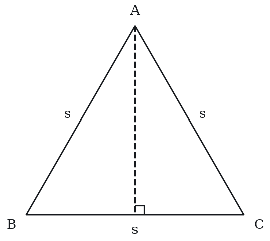
(A) s√3 / 2
(B) s / √3
(C) √(s² − s²/4)
(D) s√2 / 2
(E) (1/2)√(3s²)
Q17 · GEO-IET-022 · MCQ · 80s
Two sides of an isosceles triangle have lengths 7 and 13. Which of the following lists all possible values of the perimeter of the triangle?
(A) 27 only
(B) 33 only
(C) 21 or 33
(D) 21 or 27
(E) 27 or 33
Q18 · GEO-IET-024 · QC · 70s
Isosceles triangle MNP has MN = MP = 10 and angle M = 60°.
Quantity A: NP (the base of the triangle) Quantity B: 10
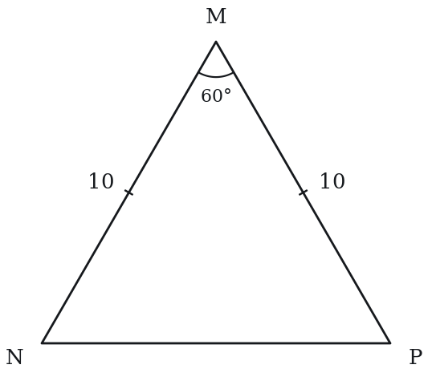
Q19 · GEO-IET-025 · MCQ · 75s
The area of an equilateral triangle is 36√3. What is the perimeter of the triangle?
(A) 12
(B) 24
(C) 36
(D) 36√3
(E) 72
Q20 · GEO-IET-029 · Numeric Entry · 95s
What is the radius of the circle inscribed in an equilateral triangle with side length 12? Round your answer to the nearest hundredth.
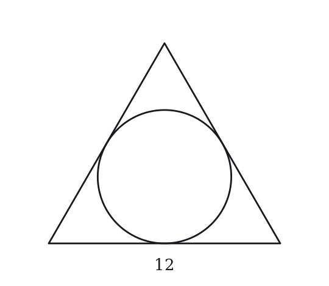
Numeric entry — write the number.
Q21 · GEO-IET-KMF-003 · QC · 60s
Triangle T is isosceles with perimeter 20, and one of its sides measures 8.
Quantity A: The length of the shortest side of T Quantity B: 4
Q22 · GEO-IET-KMF-004 · MCQ · 100s
A parallelogram is built from 8 identical equilateral triangles placed in a single row, alternately pointing up and down, with neighboring triangles sharing a full side. Its perimeter is 40 meters. What is its area, in square meters?
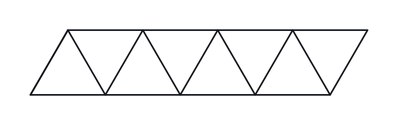
(A) 16sqrt(3)
(B) 32sqrt(3)
(C) 50sqrt(3)
(D) 64sqrt(3)
(E) 128*sqrt(3)
Q23 · GEO-IET-KMF2-001 · QC · 85s
Isosceles triangle A has two sides of length 8, and isosceles triangle B has two sides of length 10.
Quantity A: The area of triangle A Quantity B: The area of triangle B
Q24 · SEC-PG-002 · MCQ · 85s
An equilateral triangle has an altitude of length 9. What is the perimeter of the triangle?
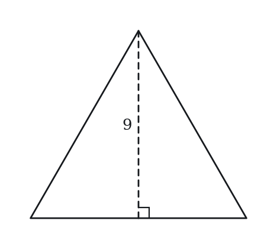
(A) 6sqrt(3)
(B) 18
(C) 27
(D) 18sqrt(3)
(E) 27*sqrt(3)
Level 3 · Hard — 6 questions · ~11 min
where 162+ is won or lost
Q25 · GEO-IET-031 · QC · 105s
In isosceles triangle ABC, AB = AC and the apex angle A = 100°. Point D is on BC such that angle DAC = 30°.
Quantity A: Angle ABD Quantity B: Angle ADB
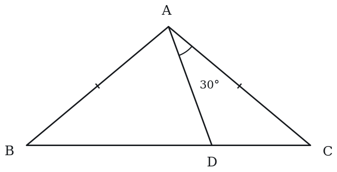
Q26 · GEO-IET-035 · QC · 100s
In isosceles triangle ABC, AB = AC. The perimeter is 50 and the base BC = 10.
Quantity A: The area of triangle ABC Quantity B: 100
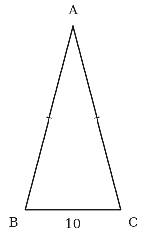
Q27 · GEO-IET-037 · MCQ · 115s
Isosceles triangle ABC has AB = AC = 10. Point D is on AB and point E is on AC such that DE is parallel to BC, and the area of trapezoid BCED equals twice the area of triangle ADE. What is the ratio DE : BC?
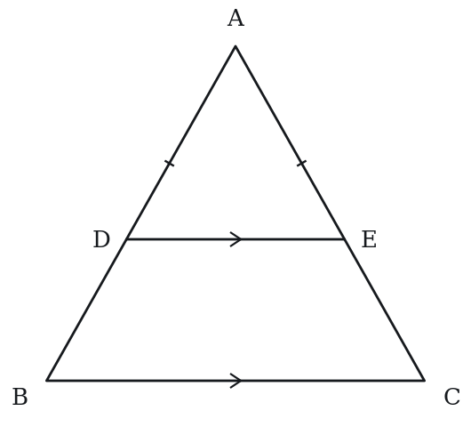
(A) 1 : 2
(B) 1 : √3
(C) 2 : 3
(D) 1 : √2
(E) √2 : √3
Q28 · GEO-IET-040 · Select all that apply · 95s
The measure of one angle of an isosceles triangle is 40 degrees. Which of the following could be the measure, in degrees, of another angle of the triangle?
Indicate all such measures.
(A) 40
(B) 50
(C) 70
(D) 80
(E) 100
Q29 · GEO-IET-KMF-001 · MCQ · 120s
In quadrilateral PQRS, side lengths satisfy PQ = QR and the diagonal QS has the same length as PQ. Angle PQR measures 64 degrees, and S lies on the opposite side of line PR from Q. What is the sum, in degrees, of angles QPS and QRS?
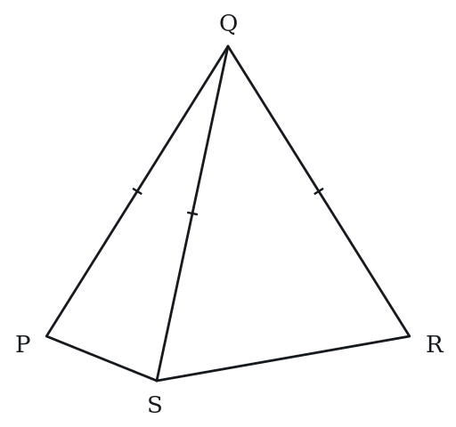
(A) 32
(B) 116
(C) 148
(D) 212
(E) 296
Q30 · GEO-IET-KMF-005 · QC · 100s
ABCD is a square. Point E lies outside the square, on the opposite side of line CD from A and B, with DE = DC and angle CDE = 40 degrees. Segment AE is drawn.
Quantity A: The measure, in degrees, of angle AED Quantity B: 30
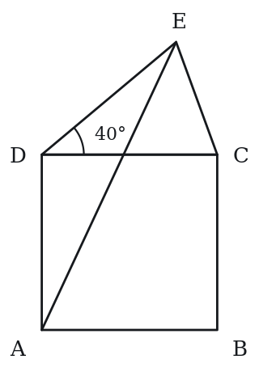
The rest of this sheet is part of Pro
All 30 questions, the answer key and full worked solutions with every trap named — plus 75 concept notes and 9,629 questions.